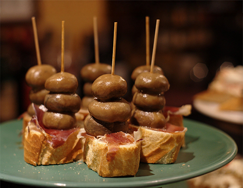
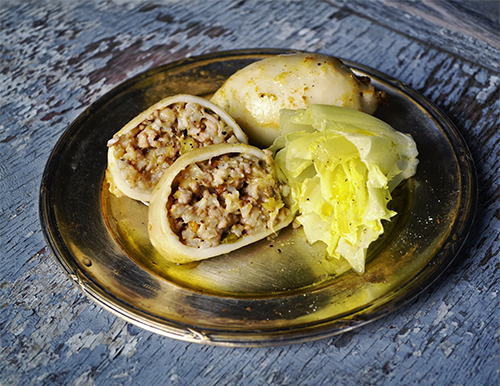
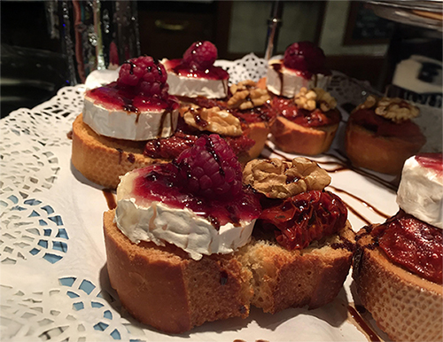
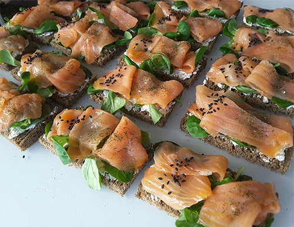

A monthly menu of delicious tapas that are fun to make at home!

Savory mushroom pinchos with iberian ham on sourdough bread.
This delicious tapas dish features plump, briny green olives paired with thin slices of savory, aged Iberian ham, creating a perfect balance of salty and rich flavors. The combination is served on crusty bread, ideal with a drizzle of olive oil. Each component adds its own unique texture, from the tender ham to the satisfying crunch of the bread, making it an irresistible snack.

Seafood salad stuffed calimari.
This mouthwatering tapas dish showcases tender calamari tubes stuffed with a creamy, zesty seafood salad, blending flavors of shrimp, crab, and tangy mayonnaise. The calamari is delicately cooked to perfection, offering a slightly crisp exterior while the filling remains rich and flavorful. Served as a bite-sized delight, it’s the perfect fusion of freshness and indulgence, making every bite a satisfying burst of oceanic goodness.

Raspberry, jam, walnut and brie on a slightly sweet bread
This indulgent tapas dish features a soft, sweet bread topped with creamy Brie cheese, a shmear of tart raspberry jam, and a cap of toasted walnut for added crunch. The rich, buttery Brie melts beautifully into the sweetness of the jam, while the walnuts offer a delightful contrast in texture and earthy flavor. It’s the perfect blend of savory, sweet, and nutty, making each bite a decadent treat for the senses.

Thinly sliced salmon on basil and cream cheese.
This elegant tapas dish showcases delicate, thinly sliced salmon layered with smooth cream cheese and fresh basil leaves, all nestled on a hearty slice of rye bread. The creamy cheese complements the rich, smoky flavor of the salmon, while the fragrant basil adds a refreshing herbal note. The rye bread provides a satisfying, earthy base that brings all the ingredients together in a perfect bite-sized harmony.